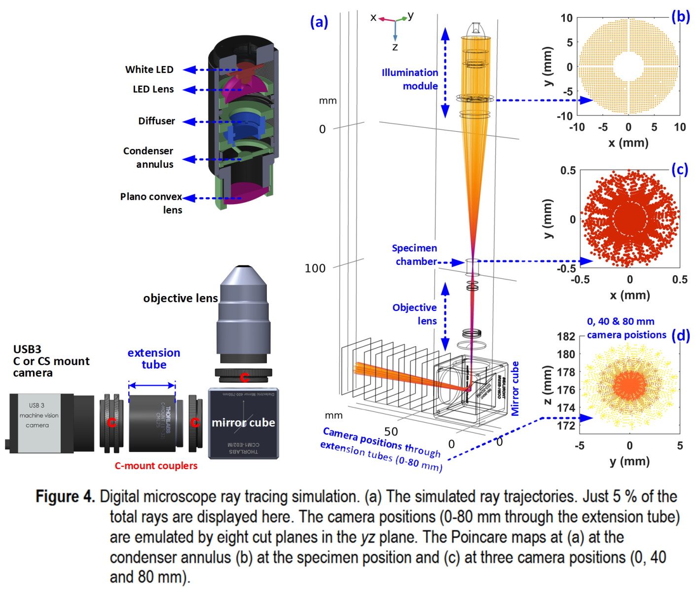

Optics and Biomedical engineering
Software development
Publications
Illumination module and in-vitro microscope ray tracing optical simulations
Design:Short focal length lens (modified inverted fish eye lens) for compact live-cell microscope (system is not ready)
Absorption probe and Irradiance map from the reflector (optical absorption probe for pH computation)
Flow through cuvette and particle scattering in flow (Optical pH and turbidity measurement)

Laser speckle imaging, autocorrelation and compensation